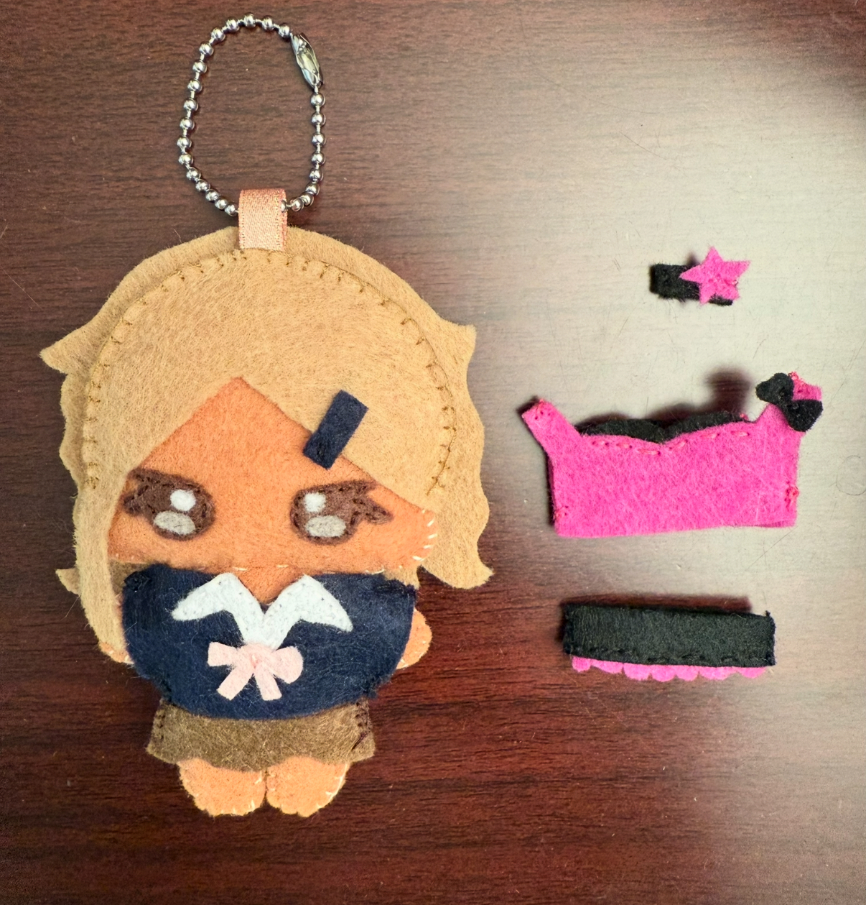

How to Make a Felt Doll!
Main Body
- Sketch out a design of the character you want to make.
- Draw and cut a stencil of the body.
- Trace the reference onto a piece of felt. Cut around the shapes. Make sure to have 2 pieces for the front and back.
- Draw and cut out the stencil of the eyes and pupils.
- Using the stencil, trace out the shape of the eyes onto another color felt of your choice. Cut it out.
- Sew the details of the eyes together before placing it on the front side of the body.
- Sew the eyes onto the body using a straight stitch or back stitch.
- Line both sides of the body together. Sew the edges together using a blanket stitch.
- Leave a hole to fill the doll with stuffing. Don't be shy to add a lot.
- Sew the hole closed so that no stuffing will fall out.
- Separate the head and body by sewing a straight stitch across the neck.
Hair
- Draw the front and back of the hair using the doll's head as a reference.
- Trace around the stencils onto a color felt of your choice.
- Cut out the hair pieces. Make sure there's enough fabric around the edges to sew together.
- Line up the front and back of the hair and sew the edges together with a blanket stitch. If there is overlapping of felt, use a straight stitch for those areas.
Clothes & Accessories
- Trace out clothes on paper using doll's dimensions as a reference.
- Cut out felt pieces for the front and back of the clothes.
- Experiment placing the pieces on the doll to make sure it fits fine. Keep cutting till you get the perfect shape while having extra edges to sew the pieces together.
- Line up the pieces and sew them around the character's body.
- Cut a straight line down the back for easy changing in case you want to dress it up with other options.
- Add any accessories as you wish (hair clip, earrings etc.)
You're done! Enjoy your cute personal creation!
